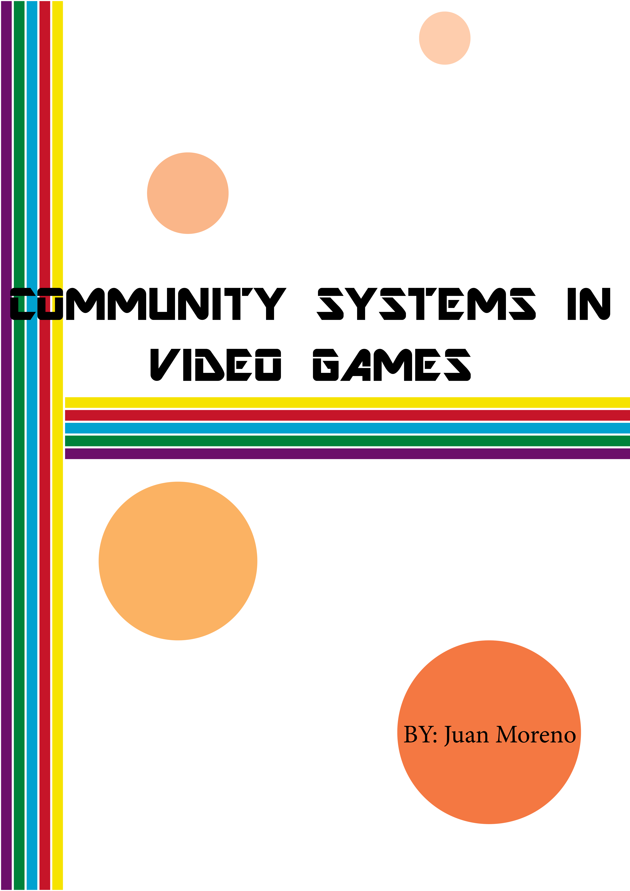

VIDEO GAME SYSTEMS PROJECT
This project was made with the purpose of showing how video games work as a system, with the main focus being community building. With this project I want to show the huge role that video games play in society and the community that it builds through simple yet complex systems. Also to make people aware that there’s more to them than what the media makes them out to be (makes people violent, cause shootings, etc) Nothing but a bad image for video games as a whole and fake news. For more context please feel free to explore this website, where I gathered and illustrated all of my research regarding Video Game Community Systems.